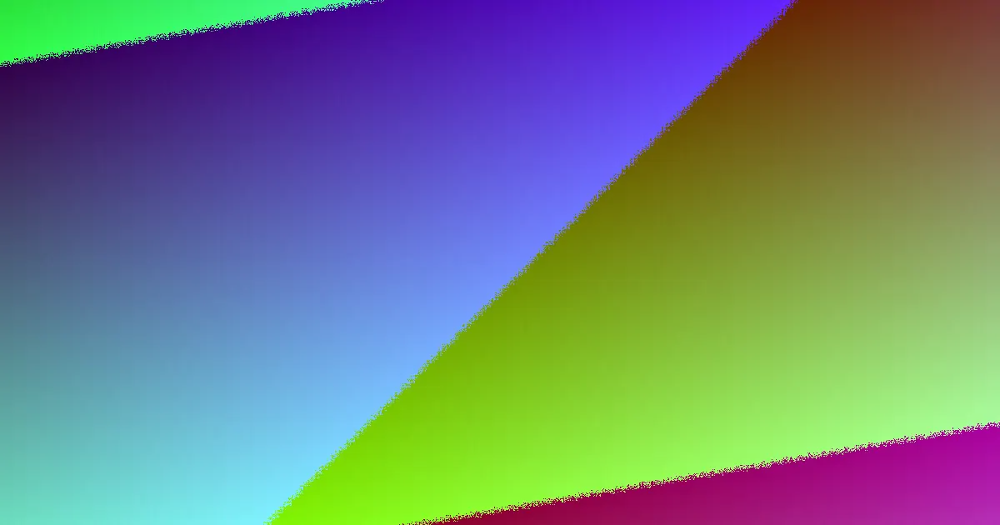

For Brisbane owners seeking retaining wall quotes, focus on project inputs rather than universal rates. Retaining Wall Pros requests location, project need, and contact details, guiding users to 17 location guides for council and government checks. A strong quote comparison examines dimensions, access, drainage, design, and approvals before evaluating the total cost.
For local buyers, retaining wall quotes brisbane what to expect aligning the scope before comparing prices
Retaining Wall Quotes Brisbane What to Expect Explained
A fair comparison of retaining wall quotes in Brisbane begins before any prices are submitted. Retaining Wall Pros structures the process around planning the wall first, then comparing providers against a consistent brief. This is crucial because one quote might encompass excavation, drainage, spoil removal, and site restoration, while another might only cover the visible face of the wall. If these scope items are not aligned, a lower figure could simply indicate less work is included.
The initial enquiry is designed to be straightforward, asking for location or postcode, project need, preferred contact method, and any optional details you already know. Optional details are valuable as they help refine the discussion to the specific site, including preferred material, timing, approximate length, retained height, access constraints, and drainage issues. Even if some details are unknown, providing the same photos and measurements to each provider ensures more comparable responses.
It is important to record approximate length and the highest and lowest retained height. Add photos of the wall line, slope, top, bottom, and nearby structures. Note gate width, stairs, side access, and where equipment or spoil might move. Describe any ponding, outlets, erosion, staining, or known stormwater connections.
Approvals Vary by Address
The source material clarifies that approvals should be checked based on the specific address, rather than relying on a generalised national height rule. For projects in Brisbane, this means treating council and government checks as an integral part of the quote brief, not an afterthought. A low wall can still incur extra load if a driveway, building, or another terrace is situated above it, and the presence of pools, boundaries, or the destination of collected water can also influence requirements.
Therefore, locality should inform the questions asked, rather than simply listing suburbs. Instead of assuming a wall is straightforward, ask each provider about site conditions that might necessitate additional design, drainage, or approval work, and whether this work is included in the quoted scope or will be a later variation. The property context is more valuable than a generic claim about Brisbane as a whole. If the site has uncertain levels or unclear discharge points, treat that uncertainty as part of the comparison. A quote that flags these issues early may be more comprehensive than one that remains silent.
Material Choice Impacts More Than Appearance
The source page categorises common retaining wall systems into concrete sleeper, timber sleeper, besser or core-filled block, rock or boulder, and gabion walls. These are not merely cosmetic choices; each option can affect footing requirements, drainage design, access needs, maintenance expectations, and the importance of engineering for the project.
Concrete sleeper systems are presented for garden, boundary, and structural retaining work, with steel posts, reinforced sleepers, drainage, and approvals considered as part of the installed scope. Timber sleeper systems are suggested for suitable garden and terraced applications, taking into account exposure, drainage, and maintenance. Core-filled block is described as an architectural option where footing, drainage, and structural design are critical. Natural rock, boulder, and sandstone systems are assessed based on footprint, batter, access, drainage, and landscape context.
When quotes feature different wall systems, they should be compared as distinct project pathways, not as direct price equivalents. It is essential to inquire about what lies behind the visible face of the wall, the assumed drainage method, and whether disposal, backfill, and restoration are included in the scope.
Who This Applies To
This guide is particularly useful for three main groups of property owners. Firstly, those planning a new retaining wall who are still determining which system best suits their site. Secondly, owners addressing a repair, replacement, or drainage issue where the visible failure might not be the sole problem. Thirdly, owners who have already received quotes but are struggling to ascertain if they cover the same scope.
For those embarking on a new wall project, the key question is what information is still needed before a provider can confirm the actual scope, offer advice, provide a price, and state availability. For repair or replacement projects, it is important to ask whether the quote addresses the root cause of the problem as well as the visible damage, especially if water management is a contributing factor.
For sites with significant drainage considerations, inquire specifically about how water collection, filtration, and lawful discharge are being managed, as the source material treats drainage as a distinct design topic rather than a simple add-on. If project timing is flexible, the enquiry form's options, researching, within 1 to 3 months, within 3 to 6 months, or existing wall needs attention, provide a practical way to communicate urgency without making unsubstantiated completion promises.
- Gather Essential Site Details. Collect approximate length and the highest and lowest retained height. Take photos of the wall line, slope, top, bottom, and nearby structures. Note gate width, stairs, side access, and potential movement areas for equipment or spoil.
- Document Drainage and Access. Describe any ponding water, existing outlets, signs of erosion, staining, or known stormwater connections. Assess site access limitations and potential challenges for machinery or material delivery.
- Clarify Approval Requirements. Ask providers about site-specific approval needs based on address, potential surcharge loads (e.g., driveways, buildings above), and water discharge destinations. Do not rely on general height rules.
- Inquire About Wall System Specifics. Understand the footing requirements, drainage design, and engineering considerations for the proposed wall material (e.g., concrete sleeper, timber, block, stone). Ask what is included beyond the visible wall face.
- Confirm Scope Inclusions. Ensure quotes clearly state whether excavation, spoil removal, backfill, drainage systems, engineering, permits, and site restoration are included in the total price.
Common questions
What affects the cost of a retaining wall? Height, length, and the chosen wall system are significant factors. However, excavation, spoil removal, site access, soil conditions, surcharge loads, drainage requirements, engineering, and necessary approvals can substantially influence the total cost more than the facing material alone. Always compare quotes based on the same scope, ensuring drainage, backfill, engineering, permits, disposal, and GST are explicitly included.
Should retaining wall quotes be compared per metre or per square metre? Neither a simple per-metre nor per-square-metre rate is sufficient on its own for accurate comparison. A lineal-metre rate, for instance, only becomes meaningful when the scope of work associated with that metre is fully understood. Factors like wall height, complexity, site conditions, and included services significantly impact the overall cost, making a holistic comparison of the entire project scope essential.
Retaining wall quotes in Brisbane and surrounding areas.